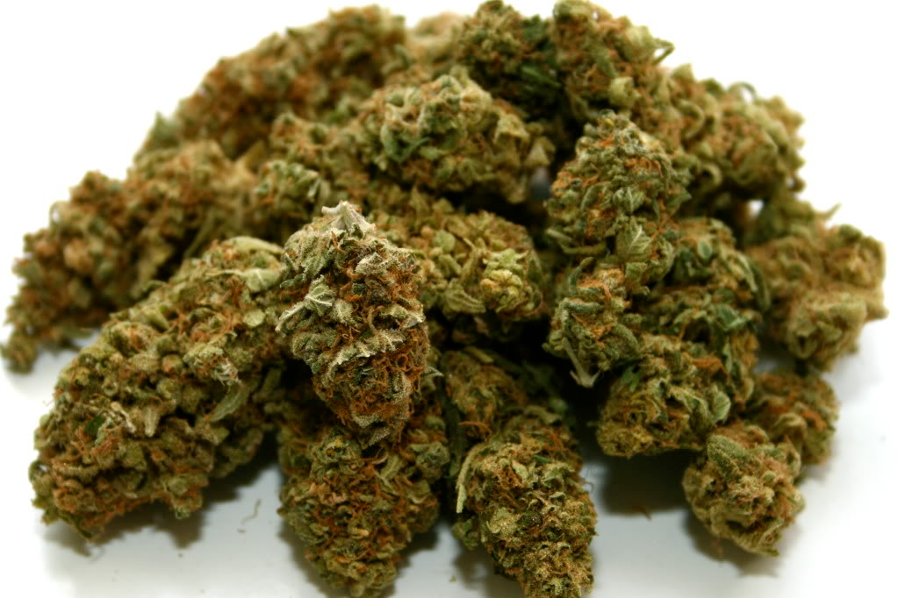

Вас приветствует команда tutKaif! Вы сейчас находитесь на главной странице-витрине нашего интернет-магазина, где легко и безопасно можно
купить бошки,
они жешишки марихуаны
ценных голландских и испанских сортов, выращенных профессиональными гроверами.
Вашему вниманию представлены 6 уникальных сортов каннабиса - первого поколения, что максимально обеспечит получение превосходного, высокого по своим качествам эффекта.
Мы также хотим предложить Вашему вниманию самый лучший в мире
гашиш
, а именно, гашиш афганского происхождения, полученный классическим способом, тем самым сохраняя в себе все наилучшие качества.Все предлагаемые товары поступают к нам из стран ближнего и дальнего зарубежья, тестируются на качество и правильно хранятся до получения товара клиентом.
Беспокоясь о своей репутации, мы предлагаем продукцию исключительного качества, по самой низкой цене, гарантируя оригинальность товара, надежную и герметичную упаковку, а также, надежно подготовленную закладку (следуя всем правилам конспирации).
AK-47

Вкус сладкий, сканковый, с оттенками фруктов, хвои и сандалового дерева.
Этот сильный каннабис отправит вас в мощнейший сативный buzz даже в небольшом количестве и создаст творческое настроение и энергетический подъем.
В терапевтических целях используется против боли и для купирования психиатрических симптомов.
Цена за 5 грамм - 61$ (120 бел.руб)
Black Widow
Бутоны Black Widow обладают восхитительным слегка терпковатым цветочным запахом, который пропитан освежающими мятными нотками и ароматом диких полевых цветов. Дым гибрида обладает мягким нежным вкусом и таким же воздействием.
Проникая в организм, он наполняет тело приятным реласком, сопровождающимся позитивными эмоциями и легким чувством эйфории.
Мягкое воздействие Black Widow сделало его прекрасным вариантом для использования в медицинских целях: стрейн отлично купирует мышечный спазм, боль, избавляет от депрессии и бессонницы.
Также гибрид отлично справляется с повышением аппетита, лечением анорексии и артритов.
Цена за 5 грамм - 61$ (120 бел.руб)
OG Kush
OG Kush – это очень
сильный сорт конопли
. Воздействие этого сорта похоже наэффект Сатива
, хотя с точки зрения генетики, в этом растении преобладаетИндикa
.Эффект этого сорта является очень сильным и комплексным, так же как и его вкус. Вкус гладкий, но богатый. Вкус не такой сильный, как другие куш или дизели, но очень приятный .
Эффекты:
- Тяжелый эффект блокировки с некоторыми свойствами Сативы, направленными на голову.
- Немного визуальные.
Очень эффективно стимулирует аппетит, вызывая острое чувство голода, облегчает сильное расстройство желудка.
-Вызывает сухость во рту и покраснение глаз ... очень расслабляет, вводит в наркотический транс.
- Очень сильный, как и все остальное нужно использовать в умеренных количествах, потому что терпимость развивается через 2 дня интенсивного использования
Вывод. Хороший сорт для: облегчения боли, устранения бессонницы, стимуляции аппетита, устранения тошноты.
Цена за 5 грамм - 61$ (120 бел.руб).
Diesel
Вкус и эффект.
Diesel имеет антикварный аромат сладких пряных трав с терпкими оттенками дизельного топлива, которые придают интригующие ощущения. Тяжелому масляному дыму присущи природные сладкие вкусовые оттенки трав и специй.
Действие Diesel пройдется по телу гулом, будто вибрации заведенного двигателя. Мышцы наполнятся тонусом и будут готовы к активному времяпрепровождению. В сознание проникнут ощущение эйфории и возвышающей легкости, разум будет бурлить потоком креативных мыслей.
Медицинское применение. Содержащиеся в Diesel КБД и ТГК взаимодействуют с рецепторами человека, помогая избавиться от таких проблем, как: депрессия, нарушение аппетита, стресс, боли и онемения в теле, мигрени, тревожные состояния.
Цена за 5 грамм - 61$ (120 бел.руб.)
Purple Sunset
Вкус и эффект. Аромат кустов не доставит проблем во время культивации, так как имеет еле слышимые кисло-сладкие оттенки фруктово-ягодного купажа. Классические ноты гашиша переплетутся со сладкими нитями фруктов в приятном вкусе дыма, оставляющего пряное послевкусие. Мощное индичное воздействие приносит глубокое расслабление и мечтательные размышления, отягощая ленивой усталостью тело. Присутствие сативы в генотипе дает эффекту стимулирующее влияние, которое разгонит мозговую активность в креативную сторону. Медицинское применение. Как и большинство индикодоминантных гибридов, Purple Sunset наделен отличными лечебными качествами, которые проявят себя в борьбе с такими недугами, как: плохой аппетит, депрессия, панические атаки, стрессовые состояния, мигрени, тошнота, боли физического характера.
Цена за 5 грамм - 61$ (120 бел.руб.)
White Russian
Вкус и эффект. Если существует в мире идеальный аромат, то, вне всяких сомнений, он принадлежит White Russian: в его безупречном букете отчетливо слышен свежий цитрусовый запах, гармонично дополненный очаровательными нотками классического сканка и роскошной сладостью. Эффект культуры отличается уверенным церебральным воздействием, сопровождающимся приятной эйфорией и повышением мозговой и двигательной активности. Медицинское применение. Высокое содержание ТГК обеспечило White Russian выраженное терапевтическое воздействие. Гибрид часто используется для купирования сильнейших болей, тошноты, мышечного спазма и снятия эмоционального напряжения. Также его использование возможно для облегчения состояния больных, страдающих психическими расстройствами, которые плохо поддаются коррекции традиционными средствами.
Цена за 5 грамм - 61$ (120 бел.руб.)
Гашиш «АФГАН»
Гашиш "Афган" источает довольно сильный аромат. Крепкий смолистый дым, проникая в организм, прокатывается по телу мощной расслабляющей волной, оставляющей после себя приятную тяжесть, а также чувство умиротворения и покоя. Афганский гашиш оказывает глубокое седативное воздействие, что делает его отличным средством от бессонницы, острых и хронических болей, нервного истощения и мышечных спазмов. Помогает быстро избавиться от тошноты, прогнать судороги и успокоить разбушевавшуюся нервную систему.
Цена за 5 грамм - 44$ (87 бел.руб.)